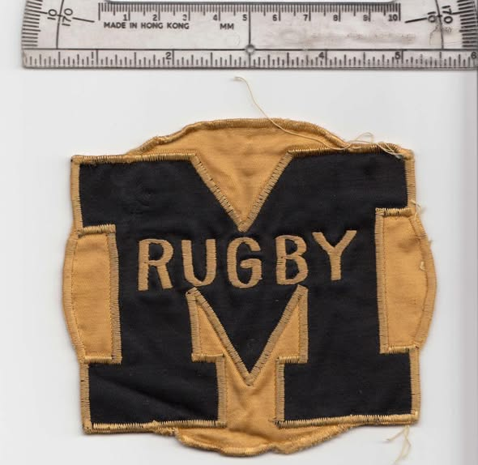

Mizzou Rugby Photo Archive
The first badge the club ever wore, kept for half a century.

“Here is the original Mizzou Rugby patch from the Sixties,” Dan McGuire wrote when he posted it. “It was worn on our plain black jackets, not our jerseys.”
The thread that followed turned quickly to bringing it back. Tyler Lasley asked what McGuire would think about putting it on the jerseys as an homage; Michael Fulk replied that “a MIZZOU RFC patch would look great on reunion jerseys,” and Hope Dunn simply said, “I dig that patch.” McGuire’s verdict: “Great idea!”
Posted to the Mizzou Rugby Old Boys group, October 6, 2016.
Photos, programmes, kit, clippings — anything from the founding season.
This is the club’s first season and the hardest to document. If you have anything at all from 1966 or 1967, we would like to see it.
Share Your Photos